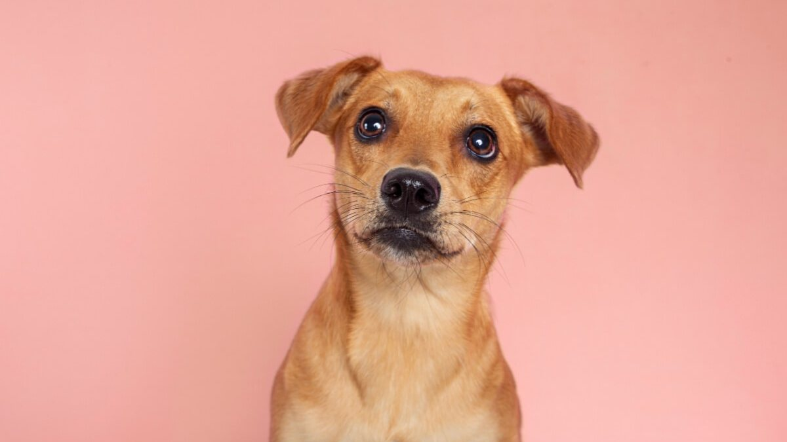

O vira-lata caramelo é o símbolo mais querido dos cães brasileiros. Com sua pelagem dourada e olhar expressivo, ele representa milhões de histórias espalhadas pelo país. Apesar de não ser uma raça oficial, ele é um dos exemplos mais famosos de SRD (Sem Raça Definida).
O SRD é resultado da mistura de diferentes raças ao longo do tempo, o que traz diversidade genética, resistência e personalidade única. Assim, o caramelo não é apenas “um cachorro comum”, mas a expressão mais icônica da beleza e da força que existem na mistura.